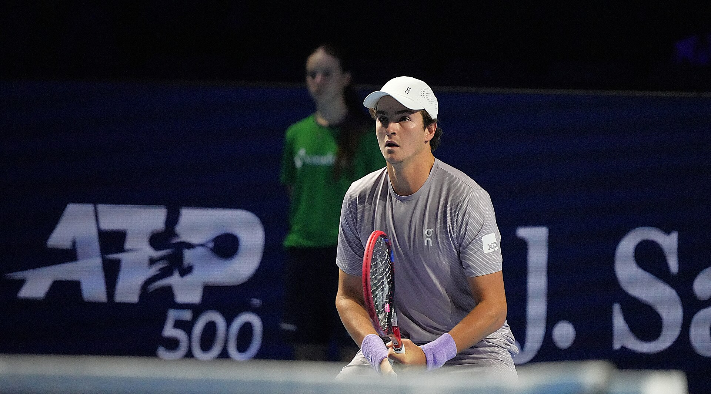

João Fonseca está pronto para iniciar sua participação no Cincinnati Open 2026, um dos torneios mais tradicionais e importantes da temporada de quadra dura. Cabeça de chave número 23, o brasileiro recebeu bye na primeira rodada e já conhece oficialmente o primeiro adversário: Botic van de Zandschulp, da Holanda, que eliminou Aleksandr Shevchenko.
O cronograma do torneio aponta o confronto para domingo, 16 de agosto, as 13hs10.
Fonseca chega embalado
A estreia em Ohio acontece depois de uma campanha relevante no Masters 1000 do Canadá. Em Montreal, o brasileiro venceu Stefanos Tsitsipas e Casper Ruud em sets diretos antes de parar diante de Ben Shelton nas oitavas de final. O norte-americano venceu por 6/3 e 7/6, impedindo Fonseca de alcançar as quartas.
A sequência reforçou a presença do brasileiro entre os nomes jovens mais observados do circuito. Fonseca aparece em Cincinnati como 23º cabeça de chave, posição que lhe permitiu avançar diretamente à segunda rodada.
O primeiro desafio, no entanto, exige atenção. Botic tem experiência de sobra no circuito e já chegou ao número 22 do ranking mundial.
Em Cincinnati, Van de Zandschulp precisou atuar desde a primeira rodada. A vitória em dois sets sobre Shevchenko colocou o holandês no caminho de Fonseca e confirmou um confronto que combina a potência e juventude do brasileiro com um adversário mais experiente e acostumado a enfrentar jogadores do topo do ranking.
Um dos torneios mais antigos do tênis
O interesse em João Fonseca é o gancho imediato, mas Cincinnati tem peso histórico muito maior do que uma simples etapa de preparação para o US Open.
A competição foi disputada pela primeira vez em 1899 e é considerado o torneio profissional de tênis mais antigo dos Estados Unidos ainda realizado em sua cidade de origem. Atualmente, as partidas acontecem no Lindner Family Tennis Center, em Mason, Ohio, região metropolitana de Cincinnati.
Hoje, ocupa a elite dos dois principais circuitos. No masculino, pertence à categoria ATP Masters 1000. No feminino, é um WTA 1000. Isso significa que os campeões de simples recebem 1.000 pontos para os respectivos rankings, além de enfrentarem uma chave repleta de atletas da elite mundial.
A edição de 2026 tem chave principal entre 13 e 23 de agosto.
Destaques masculinos do Cincinnati Open 2026
A chave masculina reúne alguns dos principais nomes do circuito, além de João Fonseca.
- Alexander Zverev;
- Novak Djokovic — tricampeão de Cincinnati, vencedor das edições de 2018, 2020 e 2023;
- Taylor Fritz;
- Ben Shelton — outro dos grandes nomes dos Estados Unidos e adversário que eliminou João Fonseca recentemente no Masters 1000 do Canadá.
- Daniil Medvedev — campeão de Cincinnati em 2019;
- Alex de Minaur;
- Félix Auger-Aliassime;
- Flavio Cobolli;
O maior campeão no masculino
Poucos torneios fora dos Grand Slams podem apresentar uma lista histórica do nível de Cincinnati. E ninguém conquistou mais vezes o título masculino na era registrada pela ATP do que Roger Federer.
O suíço levantou sete troféus e também detém o recorde masculino de vitórias no torneio, com 47. A relação especial do suíço com a competição ajuda a explicar por que Cincinnati ocupa lugar tão importante na história e Roger Federer.
Novak Djokovic também deixou uma marca profunda. O sérvio foi campeão em 2018, 2020 e 2023. A conquista de 2023 teve um componente adicional: aos 36 anos, Djokovic se tornou o campeão masculino mais velho da história do torneio. No extremo oposto está Boris Becker, vencedor em 1985 aos 17 anos, recordista como campeão mais jovem.
Outros campeões de peso ajudam a dimensionar a tradição. Daniil Medvedev venceu em 2019, Alexander Zverev em 2021. Nomes como Pete Sampras, Andre Agassi e John McEnroe também aparecem entre os campeões históricos da competição.
Guga também foi campeão
Para o tênis brasileiro, Cincinnati tem um capítulo especialmente importante. Gustavo Kuerten foi campeão em 2001, quando ocupava o número 1 do mundo.
A presença de João Fonseca em 2026, portanto, também cria uma ligação brasileira interessante entre gerações. Mais de duas décadas depois do título de Kuerten, o país volta a acompanhar um jovem brasileiro tentando avançar em uma das competições mais tradicionais do circuito internacional.
Os campeões de 2025
Os últimos campeões de simples antes da edição foram Carlos Alcaraz e Iga Swiatek.
No masculino, Alcaraz conquistou Cincinnati pela primeira vez em 2025. A decisão terminou de maneira incomum: Jannik Sinner, adversário do espanhol na final, precisou abandonar a partida apenas 23 minutos depois do início. O italiano havia perdido os cinco primeiros games antes da desistência.
No feminino, Iga Swiatek venceu Jasmine Paolini por 7/5 e 6/4 e levantou o troféu de Cincinnati pela primeira vez.
No feminino também tem grandes estrelas
A disputa feminina ocorre simultaneamente e apresenta uma das chaves mais fortes da temporada.
Destaques do Cincinnati Open 2026
- Aryna Sabalenka — cabeça de chave número 1 e campeã de Cincinnati em 2024;
- Elena Rybakina;
- Jessica Pegula;
- Coco Gauff — campeã de Cincinnati em 2023;.
- Mirra Andreeva;
- Linda Noskova;
- Iga Swiatek — campeã do Cincinnati Open em 2025;
- Elina Svitolina;
- Madison Keys — campeã de Cincinnati em 2019;
- Karolina Pliskova — vencedora do torneio em 2016;
Na história recente, Cincinnati também recebeu campeãs como Serena Williams, que venceu em 2014 e 2015.
Onde assistir:
A ATP lista o Tennis TV como plataforma oficial de streaming do circuito e a ESPN.
Um teste importante antes do US Open
Cincinnati ocupa posição estratégica no calendário. Disputado em quadra dura e às vésperas do US Open, o torneio oferece aos principais jogadores do mundo um dos últimos grandes testes antes do Grand Slam de Nova York.
Para João Fonseca, existe ainda um componente adicional. Depois das vitórias importantes sobre Tsitsipas e Ruud em Montreal, o brasileiro chega a Ohio procurando transformar bons resultados isolados em uma sequência consistente nos grandes torneios do circuito.
O primeiro obstáculo está definido: Botic van de Zandschulp. A chave está confirmada, o adversário também, e a programação aponta o confronto para domingo. O único ponto que ainda exige atualização oficial é o horário da partida.
Quando entrar em quadra, Fonseca estará não apenas disputando uma vaga na terceira rodada, mas escrevendo mais um capítulo brasileiro em um torneio que começou em 1899, já foi conquistado por Gustavo Kuerten e atravessou gerações com alguns dos maiores nomes da história do tênis.